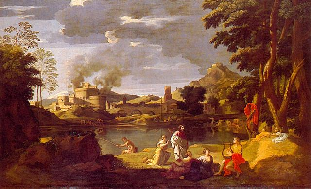

Listen to "The Maenad" in English

|
Transl. Christian Souchon 01.01.2004 (c) (r) All rights reserved |
Note :
Ménade: l'une des femmes participant aux rites de Dionysos qui mirent en pièces Orphée parce que celui-ci, désespéré par la seconde perte de son épouse Eurydice, fuyait la compagnie des femmes.
"Selon les Histoires incroyables de Palaiphatos, Orphée n'a jamais dompté les animaux de sa harpe, comme le prétend le mythe. Les Ménades en délire mettaient en pièces les troupeaux de Piérie, commettant de nombreux actes de violence avant de s'en retourner dans les montagnes pour y rester pendant des jours. Orphée fut chargé d'imaginer un moyen de les faire revenir chez elles. Après avoir sacrifié à Dionysos, il les fit descendre des montagnes en jouant de la lyre, par deux fois : la première fois, tenant à la main le "thyrse", elles arrivaient de la montagne, couvertes de feuillages d'arbres de toute espèce." (Wikipédia, article "Orphée").
Si dans ce poème Orphée attend une ménade au bord de l'Erèbe, c'est peut être que ce mot désigne Eurydice qui était en fait, non pas une ménade, mais une "dryade", une nymphe des chênes...
Le nom de la Ménade qui hante les rêves d'Orphée-Galiana est caché dans la 4ème strophe: c'est "Rosine", la jeune fille rencontrée au parc de Saint-Cloud.
Qu'il abandonne ces rêves malsains et retourne à sa cellule et à son écritoire, au monde des chiffres et des lettres!
Maenad: one of the women participating in the rites of Dionysus who tore Orpheus to pieces because he was despaired by the second loss of his wife Eurydice, fled the company of women.
"According to the "Incredible Stories" by Palaiphatos, Orpheus never tamed animals with his harp, as the myth claims. The delirious Maenads used to tear the herds of Pieria to pieces and to commit all sorts of violence before returning into the mountains to stay there for days. Orpheus was tasked with bringing them back home. After having sacrificed to Dionysus, he brought them twice down from the mountains, playing the lyre : the first time, holding the thyrsus in their hands, they came from the mountain, covered by the foliage of various trees. (Wikipedia, article "Orpheus").
If in this poem Orpheus waits for a maenad on the banks of the Erebus, it is perhaps because this word refers to Eurydice who was in fact not a maenad but a "dryad", an oak nymph...
Here the name of the Maenad who haunts Orpheus-Galiana's dreams is hidden in the 4th stanza: it is "Rosine", the young girl met in the Saint-Cloud park.
Let him abandon these unsane dreams and return to his cell and his writing desk, to the world of numbers and letters!
Listen to "The Maenad" in English